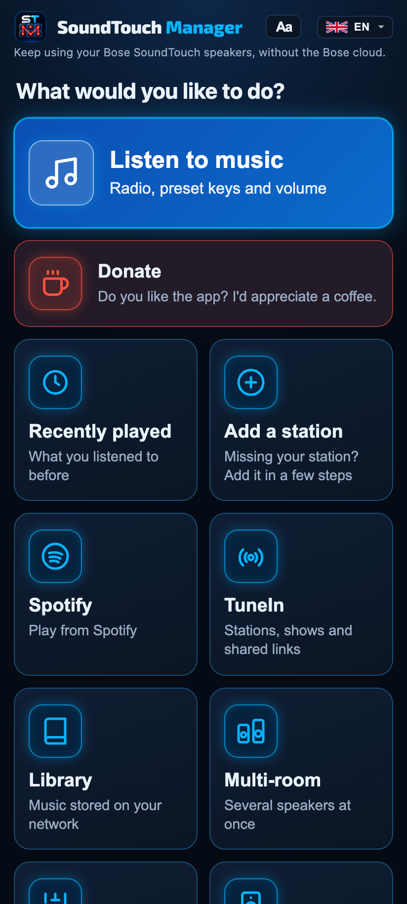
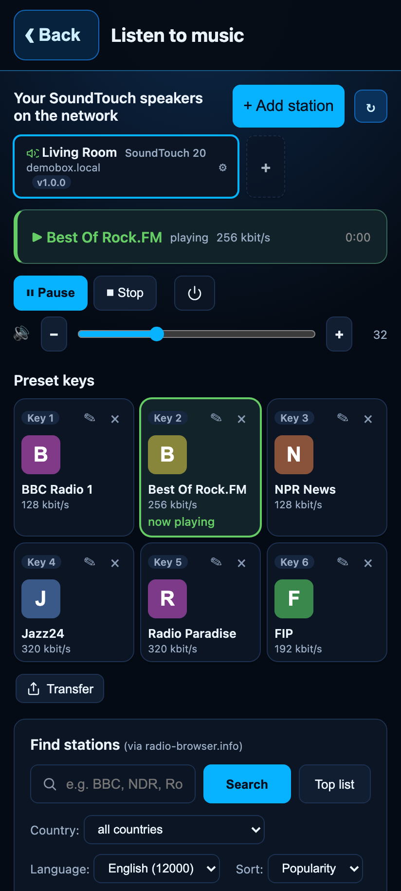
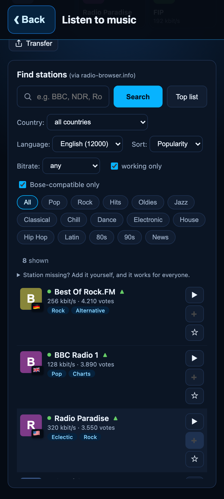
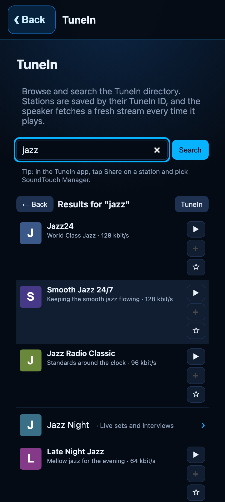
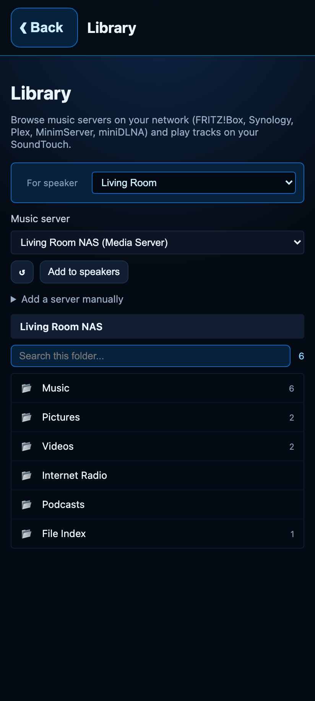
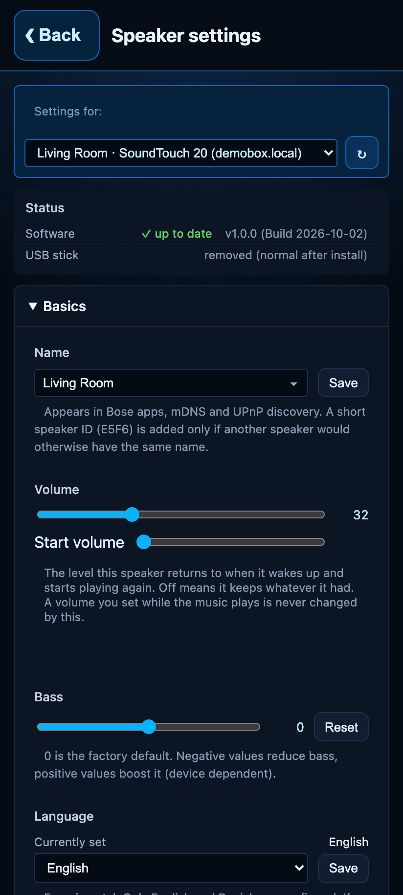
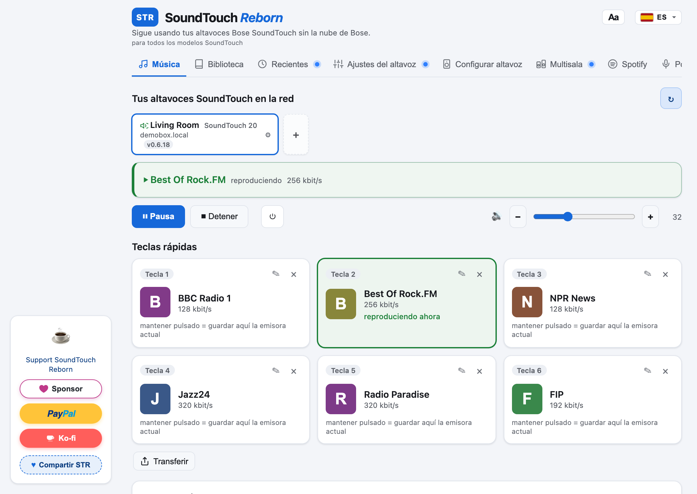

Tu Bose SoundTouch, funcionando otra vez.
Bose apagó la nube de SoundTouch el 6 de mayo de 2026. SoundTouch Manager devuelve la radio por Internet, las teclas de presintonía, Spotify y el control remoto, todo funcionando en tu propio altavoz, sin cuenta y sin nube.
Gratis y de código abierto (licencia MIT).Instalar con la app de Android
El teléfono y el altavoz tienen que estar en el mismo Wi-Fi. Usa esta copia hasta que la app esté en Google Play.






- Descarga SoundTouchReborn-1.0.0.apk. Si el navegador dice que el archivo puede dañar el dispositivo, elige Descargar de todas formas.
- Permite la instalación. Si Android la bloquea, pulsa Ajustes y permite que el navegador o la app Archivos instalen apps desconocidas. Luego abre el archivo otra vez.
- Pasa Play Protect. Si dice que la app es desconocida, pulsa Más detalles y después Instalar de todas formas.
- Abre la app y elige "Configurar altavoz". Copia un pequeño agente a un altavoz que ya está en tu Wi-Fi. No hace falta memoria USB.
En el teléfono esta copia se llama SoundTouch Reborn. El apoyo abre GitHub Sponsors, PayPal y Ko-fi. Cuando la versión de Play Store esté disponible, desinstala esta copia primero y luego instala desde Play: son apps distintas. No hay paquete para iPhone. Apple solo instala una app que haya firmado para ese teléfono, o una que venga del App Store.

Lo que recuperas
Radio por Internet
Busca entre miles de emisoras de radio-browser.info y escúchalas en cualquier altavoz.
Teclas 1 a 6
Los botones del altavoz y del mando vuelven a funcionar, con las emisoras que elijas.
Spotify Connect
Reproduce Spotify en el altavoz y guarda listas en las teclas de presintonía.
Tu propia música
Explora servidores DLNA de tu red (FRITZ!Box, Synology, Plex, miniDLNA).
Multisala y estéreo
Agrupa altavoces para que suenen sincronizados, o empareja dos como izquierdo y derecho.
Mando en el móvil
Cada altavoz ofrece un control remoto en el navegador del teléfono. Sin tienda de apps ni cuenta.
Instalación en tres pasos
- Descarga la app para Windows, macOS o Linux.
- Ábrela en la misma red que tu altavoz. Encuentra tus altavoces SoundTouch automáticamente.
- Elige "Configurar altavoz". La app instala un pequeño agente en el altavoz a través de tu red doméstica. No hace falta memoria USB; sigue disponible como alternativa.
Windows o macOS avisan que la app es de un desarrollador desconocido
Una versión sin firma de código muestra un aviso la primera vez que la abres.
- Windows (SmartScreen): haz clic en Más información y luego en Ejecutar de todas formas. Si el navegador bloquea el .exe, descarga el .zip y abre el archivo de dentro.
- macOS (Gatekeeper): la imagen es para Apple Silicon (M1 o posterior). Arrastra la app a Aplicaciones, haz clic derecho, elige Abrir y luego Abrir otra vez. O ve a Ajustes del Sistema, Privacidad y seguridad y pulsa Abrir igualmente.
- Linux: descomprime el archivo, ejecuta
chmod +x SoundTouchManager-1.0.0-Linux-x64y ábrelo. Necesita GTK 3 y WebKitGTK 4.1.
Para comprobar que la descarga está íntegra, compara su SHA-256 con el archivo SHA256SUMS.
Altavoces compatibles
| Modelo | Estado |
|---|---|
| SoundTouch 10 | Verificado |
| SoundTouch 20 | Funciona |
| SoundTouch 30 | Funciona |
| SoundTouch Portable | Verificado |
| SoundTouch 300, Wave III y IV, SA-4, SA-5, CineMate 520 y 130 | Funciona (instalación por red) |
Detalle por modelo (en inglés): docs/MODELS.md.
Preguntas frecuentes
¿Necesito una cuenta de Bose o la app de Bose?
No. Todo funciona en tu altavoz y en tu computadora, dentro de tu red doméstica.
¿Qué firmware necesita el altavoz?
SoundTouch Manager está hecho y probado con el firmware 27.0.6 de Bose, el último que Bose publicó. Actualiza primero el altavoz y después instala. La guía de firmware (en inglés) explica cómo hacerlo con las imágenes oficiales de Bose y una memoria USB.
La actualización de firmware se atasca o es rechazada
Se ha reportado que altavoces con un firmware muy antiguo rechazan el salto directo a 27.0.6. Lo que funcionó fue bajar primero y luego subir: instalar 6.02.01 y después 27.0.6. Un restablecimiento de fábrica (mantener 1 y bajar volumen durante diez segundos) antes de actualizar puede limpiar un estado a medio configurar. Estos pasos vienen de reportes de usuarios y el proyecto no los ha reproducido; consulta la sección 4 de la guía de firmware.
¿Cómo lo quito de un altavoz?
En la app, abre los ajustes del altavoz y elige Eliminar STM. Un restablecimiento de fábrica de Bose por sí solo no lo elimina, así que hazlo antes de vender o regalar un altavoz.
Algo no funciona
Revisa los problemas abiertos o abre uno nuevo. En la app, Guardar registros de diagnóstico en el pie de página crea un informe anonimizado que puedes adjuntar.
Apoya el proyecto
SoundTouch Manager es gratis. Si salvó tus altavoces, un café ayuda a mantenerlo.